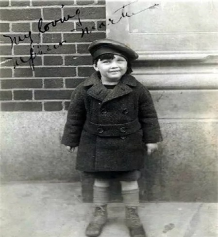

Copilăria
Stanley Martin Lieber s-a născut pe 28 decembrie, 1922, în Manhattan, New York, în apartamentul părinților săi, Celia și Jack Lieber, parintii sai erau Evrei români. Mai târziu, s-au mutat în Forth Washington Avenue, în Washington Heights. Stan are un frate mai tânăr pe nume, Larry Lieber. Stan a declarat în 2006 că în timpul copilăriei, a fost influențat de cărți și filme, în special cele cu Errol Flynn, jucând roluri eroice. În perioada adolescenței, acesta împreună cu familia sa au locuit într-un apartament în Bronx, unde a împărtășit același dormitor cu fratele său.
Lee a urmat Liceul DeWitt Clinton în Bronx. În tinerețea sa, a avut diferite joburi de scriitor de necrologuri și de comunicate de presă pentru Centrul Național de Tuberculoză. A vândut abonamente pentru ziarul New York Herald Tribune . La vârsta de 15 ani, Stan a intrat în competiția de scris esee din liceu, "The Biggest News of the Week Contest" sponsorizată de New York Herald Tribune Editorul ziarului i-a trimis o scrisoare de încurajare, sugerându-i să devină un scriitor profesionist, motivându-l pe tânărul Stan să devină unul dintre cei mai aclamați scriitori. A absolvit liceul la vârsta de 16 ani și jumătate în 1939 și s-a alăturat programului de teatru, WPA Federal Theatre Project. WPA Federal Theatre Project